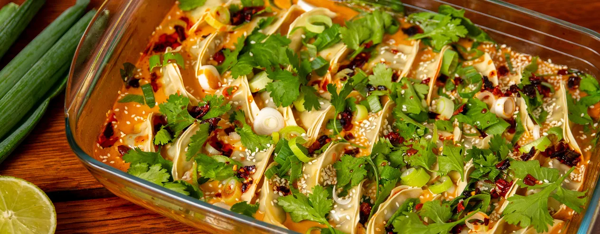

Dumpling bake/One Pan Baked Dumplings
Ingredienser
- 400 ml kokosmjölk
- 1 klyfta vitlök
- 0,5 msk färsk ingefära
- 2 - 3 msk röd currypasta
- 3 msk japansk soja
- 1 msk limejuice
- 100 g färsk spenat
- 400 g frysta dumplings
- 1 kruka färsk koriander
- 0,5 msk sesamfrön
- 2 - 3 msk crispy chili oil
Tillagning
- Sätt ugnen på 200 grader.
- Riv vitlöken och ingefäran fint och grovhacka koriandern.
- Häll kokosmjölken i en ugnssäker form, ca 20x30 cm. Tillsätt vitlök, ingefära, currypaste, soja och limejuice. Vispa försiktigt tills allt har blandats ordentligt.
- Fördela spenaten i formen. Lägg i dumplingsen med platta sidan nedåt. Täck med folie. Sätt in i mitten av ugnen 15–20 minuter tills dumplingsen är klara.
- Strö över salladslök, koriander och sesamfrön. Avsluta med att ringla över chiliolja.